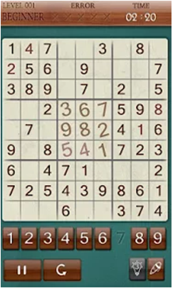
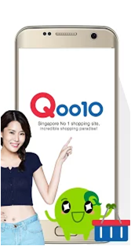
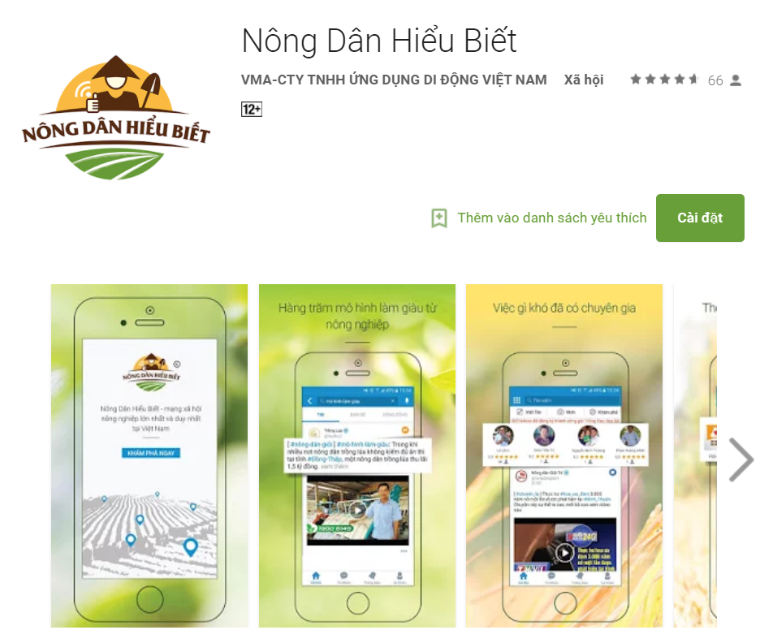
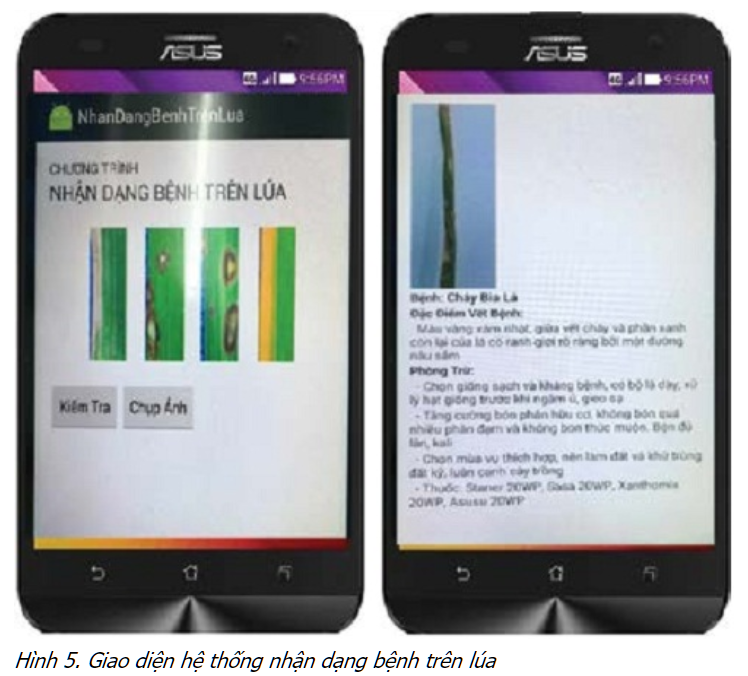
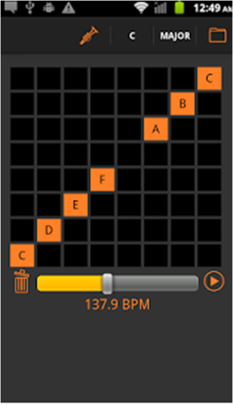
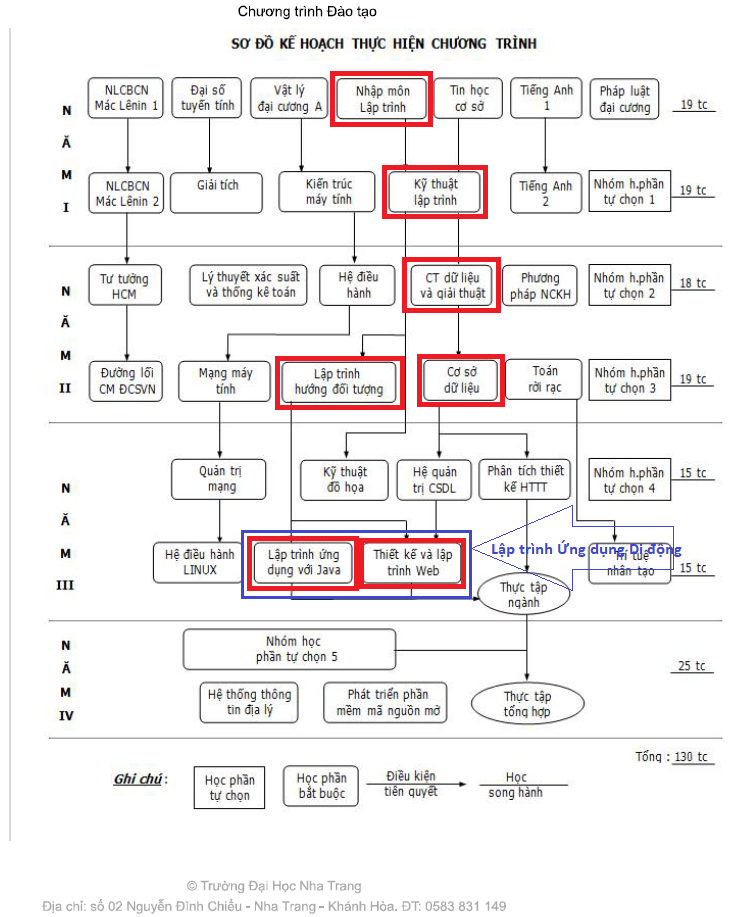
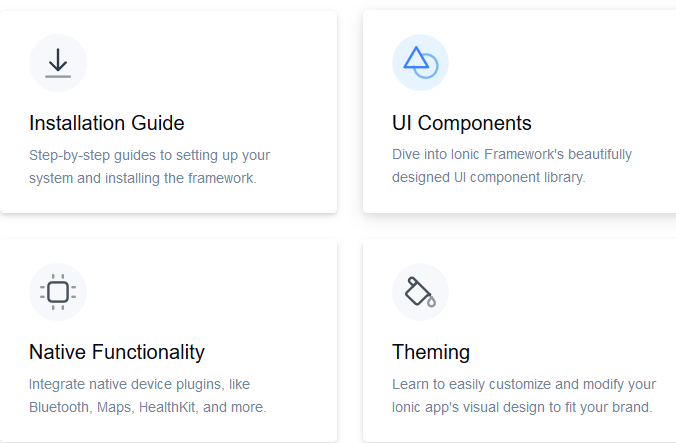
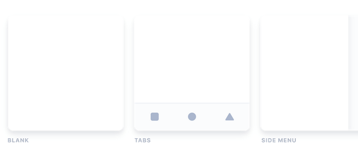

Phát triển Ứng dụng Di động
Giới thiệu
 Nội dung
Nội dung
 Kế hoạch học tập
Kế hoạch học tập Thảo luận sinh viên
Thảo luận sinh viên
Kế hoạch học tập
 Mục lục
Mục lục
- Website
- Mục đích môn học
- Công nghệ di động
- Tài liệu học tập
- Công việc học tập
- Phân bố điểm
- Hoạt động trong lớp
- Thể loại dự án
- Thị trường di động
- Hỏi & Đáp
Website
- http://www.pvhoang.vn/pdu
- Chương trình học phần
- Thông tin mới nhất
- Điểm cập nhật
- Slides trình chiếu
- Các thông tin khác
- nguyentrinhan70@gmail.com
- Giờ gặp: theo hẹn
 Mục đích
Mục đích
- Giúp bạn:
- cách lập trình phần mềm theo hướng đối tượng một cách hiệu quả nhất.
- cách thiết kế giao diện và triển khai mô hình từ ý tưởng trước khi lập trình.
- phát triển ứng dụng di động với nền tảng Web 2.0 Hybrid Ionic mới nhất trên HĐH Android và iOS.
Mục đích
- Giúp bạn:
- có động lực và niềm tin chọn ngành Phát triển Phần mềm cho sự nghiệp tương lai.
- thêm cơ hội làm việc cho các công ty lớn nhất Việt Nam: FPT, TMA và thế giới: Facebook, Google, v.v.
Công nghệ di động
Tài liệu
- Giáo trình
- “Phát triển Ứng dụng Di động”, Phan Viet Hoang, 2017
- Sách
- “Mobile App Development with Ionic 2”, Christopher Griffith, 2017
- “Building Mobile App with Ionic 2”, Josh Morony, 2016
Công việc
- Trình bày trong lớp
- Bài tập
- thiết kế ý tưởng
- thiết kế mô hình (trên giấy)
- lập trình
- Dự án
Phân bố điểm
- Phân bố điểm
- Bài tập = 30%
- Thực hành = 70%
Hoạt động trong lớp
- Lý thuyết
- phân tích bài học
- thảo luận kỹ thuật
- Thực hành
- trình chiếu ý tưởng
- thảo luận bài tập
- thảo luận dự án
Dự án
- Thể loại
- Trò chơi
- Mua sắm
- Dịch vụ
- Hình ảnh, nhạc
- Nông nghiệp
- Nhận dạng: chữ viết, chữ in, tiếng nói
- Học ngoại ngữ, giáo dục
- Du lịch, khách sạn
Ứng dụng di động

- Trò chơi
Ứng dụng di động

- Mua sắm
Ứng dụng di động
- Dịch vụ
Ứng dụng di động - Nông nghiệp

Ứng dụng di động - Nông nghiệp

Ứng dụng di động
- Du lịch
- Khách sạn
Ứng dụng di động

- Nhạc
Thị trường di động
Hỏi & Đáp
CTĐT - KSPM - KCNTT - ĐHPVĐ

CTĐT - KSPM - KCNTT - ĐHPVĐ
- B1-22 - Lập trình hướng đối tượng
- Java ?
- B1-23 - Cấu trúc dữ liệu và giải thuật
- MySQL ?
- B2-39 - Thiết kế và lập trình web
- PhP ?
CTĐT - KSPM - KCNTT - ĐHPVĐ
- B3-47 - Lập trình Java nâng cao
- Phân tích và thiết kế hướng đối tượng
- Eclipse, NetBean, NPM, Sublime Text ?
- B3-46 - Lập trình ứng dụng mobile
- Native: Android, iOS ?
- Hybrid: Ionic, ReactNative ?
- B2-37 - Công nghệ phần mềm
- Agile, RUP, Waterfall ?
- B3-53 - Kiểm thử phần mềm
- Cucumber ?
Sinh viên
- Khảo sát
- Kiến thức ngôn ngữ lập trình: C++, C#, Java
- Thảo luận
- Kiến thức phần mềm di động
- Hệ điều hành: Android (Samsung), iOS (iPhone)
Getting Started
- Ionic Framework
- Ionic Framework is an open source UI toolkit for building performant, high-quality mobile and desktop apps using web technologies — HTML, CSS, and JavaScript — with integrations for popular frameworks like Angular and React. Get started building by installing Ionic or following our First App Tutorial to learn the main concepts.
 Ứng dụng di động
Overview
- Khảo sát
- Ionic Framework focuses on the frontend UX and UI interaction of an app — UI controls, interactions, gestures, animations. It's easy to learn, and integrates with other libraries or frameworks, such as Angular, React, or Vue. Alternatively, it can be used standalone without any frontend framework using a simple script include. If you’d like to learn more about Ionic Framework before diving in, we created a video to walk you through the basics.
- One codebase, running everywhere
- Ionic is the only mobile app stack that enables web developers to build apps for all major app stores and the mobile web from a single codebase. And with Adaptive Styling, Ionic apps look and feel at home on every device.
- Hệ điều hành: Android (Samsung), iOS (iPhone)
Overview
- A focus on performance
- Ionic is built to perform and behave great on the latest mobile devices with best practices like efficient hardware accelerated transitions, and touch-optimized gestures.
- Clean, simple, and functional design
- Ionic is designed to work and display beautifully on all current mobile devices and platforms. With ready-made components, typography, and a gorgeous (yet extensible) base theme that adapts to each platform, you'll be building in style.
Overview
- A focus on performance
- Ionic emulates native app UI guidelines and uses native SDKs, bringing the UI standards and device features of native apps together with the full power and flexibility of the open web. Ionic uses Capacitor (or Cordova) to deploy natively, or runs in the browser as a Progressive Web App.
Goals
- Cross-platform
- Web Standards-based
- Beautiful Design
- Simplicity
- Framework Compatibility
Environment Setup
- CONTENTS
- Terminal
- Node & npm
- Git
- Environment
- To get started with Ionic Framework, the only requirement is a Node & npm environment.
- Of course, a code editor is also required. Visual Studio Code is recommended. Visual Studio Code is a free, batteries-included text editor made by Microsoft. PyCharm.
Terminal
- For Windows, Command Prompt and PowerShell are supported. WSL is known to work with Ionic, but may not be supported.
- For macOS, the built-in Terminal app is supported.
Node & npm
- ?
- Almost all tooling for modern JavaScript projects is based in Node.js. The download page has prebuilt installation packages for all platforms. We recommend selecting the LTS version to ensure best compatibility.
- Node is bundled with npm, the package manager for JavaScript.
- To verify the installation, open a new terminal window and run:
- node --version
- npm --version
Installing Ionic
- CONTENTS
- Install the Ionic CLI
- Start an App
- Run the App
Install the Ionic CLI
- Before proceeding, make sure your computer has Node.js installed.
See these instructions to set up an environment for Ionic.
Install the Ionic CLI with npm:
- npm install -g @ionic/cli
- If there was a previous installation of the Ionic CLI, it will need to be uninstalled due to a change in package name.
- npm uninstall -g ionic
- npm install -g @ionic/cli
Start an App
- Create an Ionic app using one of the pre-made app templates,
or a blank one to start fresh. The three most common starters are the blank starter,
tabs starter, and sidemenu starter. Get started with the ionic start command:
- ionic start myApp tabs
Start an App
- Create an Ionic app using one of the pre-made app templates,
or a blank one to start fresh. The three most common starters are the blank starter,
tabs starter, and sidemenu starter. Get started with the ionic start command:
- ionic start myApp tabs 
Run the App
- The majority of Ionic app development can be spent right in the browser using the ionic serve command:
- cd myApp
- ionic serve
Install the Ionic CLI
- CONTENTS
- Terminal
- Node & npm
- Git
- Environment
- To get started with Ionic Framework, the only requirement is a Node & npm environment.
- Of course, a code editor is also required. Visual Studio Code is recommended. Visual Studio Code is a free, batteries-included text editor made by Microsoft. PyCharm.
Install the Ionic CLI
- CONTENTS
- Terminal
- Node & npm
- Git
- Environment
- To get started with Ionic Framework, the only requirement is a Node & npm environment.
- Of course, a code editor is also required. Visual Studio Code is recommended. Visual Studio Code is a free, batteries-included text editor made by Microsoft. PyCharm.
Install the Ionic CLI
- CONTENTS
- Terminal
- Node & npm
- Git
- Environment
- To get started with Ionic Framework, the only requirement is a Node & npm environment.
- Of course, a code editor is also required. Visual Studio Code is recommended. Visual Studio Code is a free, batteries-included text editor made by Microsoft. PyCharm.
Install the Ionic CLI
- CONTENTS
- Terminal
- Node & npm
- Git
- Environment
- To get started with Ionic Framework, the only requirement is a Node & npm environment.
- Of course, a code editor is also required. Visual Studio Code is recommended. Visual Studio Code is a free, batteries-included text editor made by Microsoft. PyCharm.